5 Pattern-book functions
In this Chapter, we introduce the pattern-book functions—a brief list of basic mathematical functions that provide a large majority of the tools for representing the real world as a mathematical object. Think of the items in the pattern-book list as different actors, each of whom is skilled in portraying an archetypal character: hero, outlaw, lover, fool, comic. A play brings together different characters, costumes them, and relates them to one another through dialog or other means.
A mathematical model is a kind of story; a mathematical modeler is a kind of playwright. She combines mathematical character types to tell a story about relationships. We need only a handful of mathematical functions, the analog of the character actors in drama and comedy to sketch a model. In creating a mathematical model, you clothe the actors to suit the era and location and assemble them in harmony or discord.
Costume designers use their imagination, often enhanced by referencing published collections of patterns and customizing them to the needs at hand. These references are sometimes called “pattern books.” (See Figure 5.1.)
Similarly, we will start with a pattern set of functions that have been collected from generations of experience. To remind us of their role in modeling, we will call these pattern-book functions. These pattern-book functions are useful in describing diverse aspects of the real world and have simple calculus-related properties that make them relatively easy to deal with. There are just a handful of pattern-book functions from which untold numbers of useful modeling functions can be constructed. Mastering calculus is in part a matter of becoming familiar with the mathematical connections among the pattern-book functions. (You will see these in due time.)
Here is a list of our pattern-book functions written traditionally and in R:
| Pattern name | Traditional notation | R notation |
|---|---|---|
| exponential | \(e^x\) | exp(x) |
| logarithm (“natural log”) | \(\ln(x)\) | log(x) |
| sinusoid | \(\sin(x)\) | sin(x) |
| square | \(x^2\) | x^2 |
| proportional | \(x\) | x |
| one | \(1\) | 1 |
| reciprocal | \(1/x\) or \(x^{-1}\) | 1/x |
| gaussian | \(\dnorm(x)\) | dnorm(x) |
| sigmoid | \(\pnorm(x)\) | pnorm(x) |
The input name used in the table, \(x\), is entirely arbitrary. You can (and will) use the pattern-book functions with other quantities—\(y\), \(z\), \(t\), and so on, even zebra if you like.
In addition to the names of the pattern-book functions, you should be able to draw their shapes easily. Table 11.1 provides a handy guide.
Shapes of the pattern-book functions
| const | prop | square | recip | gaussian | sigmoid | sinusoid | exp | ln |
|---|---|---|---|---|---|---|---|---|
 |
 |
 |
 |
 |
 |
 |
 |
 |
These pattern-book functions are widely applicable. But nobody would confuse the pictures in a pattern book with costumes that are ready for wear. Each pattern must be tailored to fit the actor and customized to fit the theme, setting, and action of the story. We will study how this is done starting in Chapter Chapter 8.
5.1 Pattern and shape
The pattern-book functions are closely related to one another but each has a distinctive shape. The variety of shapes makes the small set of pattern-book functions suited to a wide range of modeling tasks.
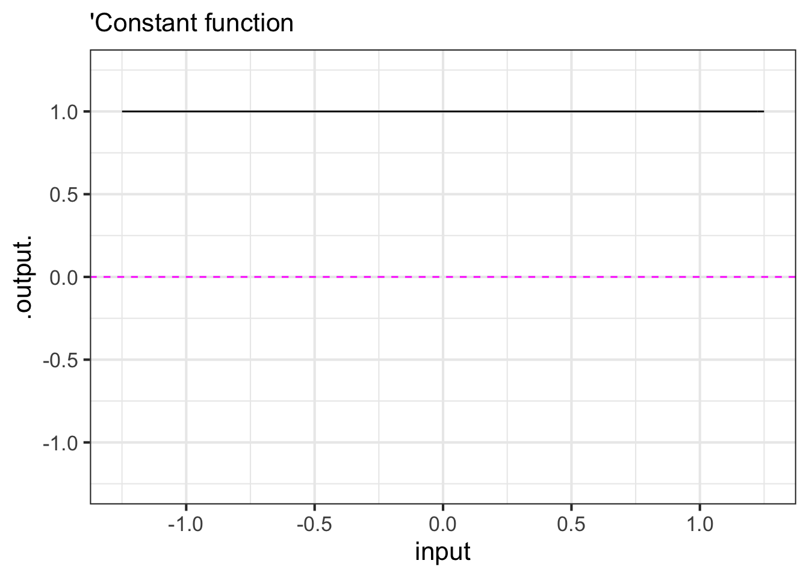
The constant function is so simple that you may be inclined to deny that it is a function at all. The output of the constant function is always numerical 1, regardless of the input. Its graph is therefore a horizontal line.
You may wonder why to take the trouble to make a function whose output is always the same. After all, in a formula it shows up simply as the number 1, not looking like a function at all. But formulas are not the only way of representing functions. For instance, in Block III we will use a mathematical structure called a “vector” to represent functions where the constant function won’t be just the number 1.
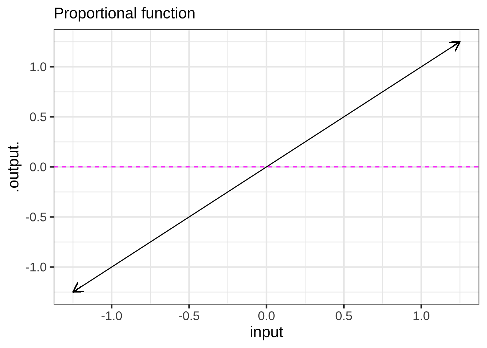
The proportional function is also simple. Whatever is the input will become the output. (Another appropriate name for the proportional function is the “identity function” because the output is identical to the input.) The graph of the proportional function is a straight line going through \((0,0)\) with slope 1.
Despite the simplicity of the proportional function, it is heavily used in modeling. In a formula, the proportional function appears as \(x\) or \(y\) or whatever the input name is to be. This can make it hard to remember that it is indeed a function.
The remaining pattern-book functions all have curved shapes.
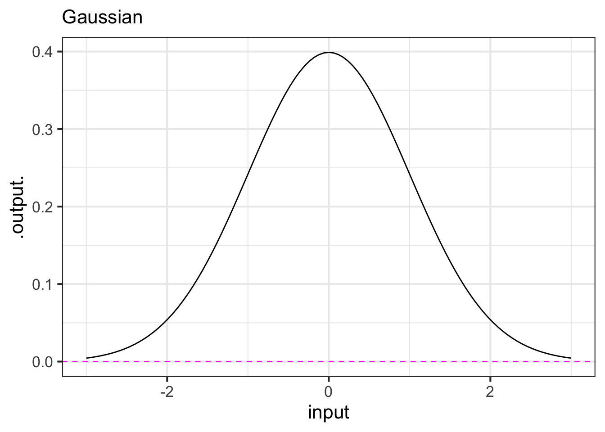
The *Gaussian function is shaped like a mountain or, in many descriptions, like the outline of a bell. As the input becomes larger—in either the positive or negative directions—the output gets closer and closer to zero but never touches zero exactly.
The Gaussian function shows up so often in modeling that it has another widely used name: the normal function. But “normal” has additional meanings in mathematics, so we will not use that name in this book.
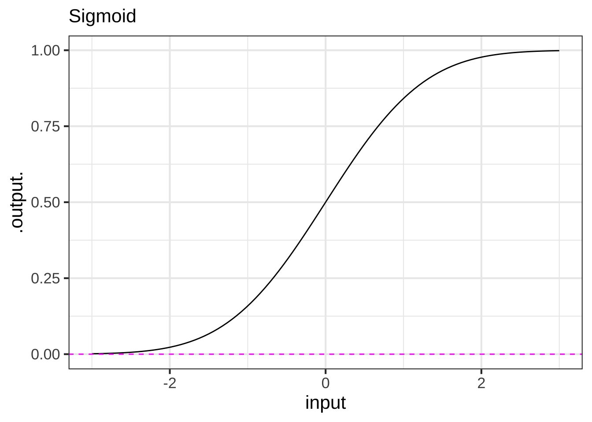
The sigmoid function models smooth transitions. For large negative inputs, the output is (very nearly) zero. For large positive inputs, the output is (very nearly) one. The sigmoid is closely related to the Gaussian. As you progress in calculus, the relationship will become evident.

The exponential function has important applications throughout science, technology, and the economy. For large negative inputs, the value is very close to zero in much the same way as for the Gaussian or sigmoid functions. But the output increases faster and faster as the input gets bigger. Note that the output of the exponential function is never negative for any input.
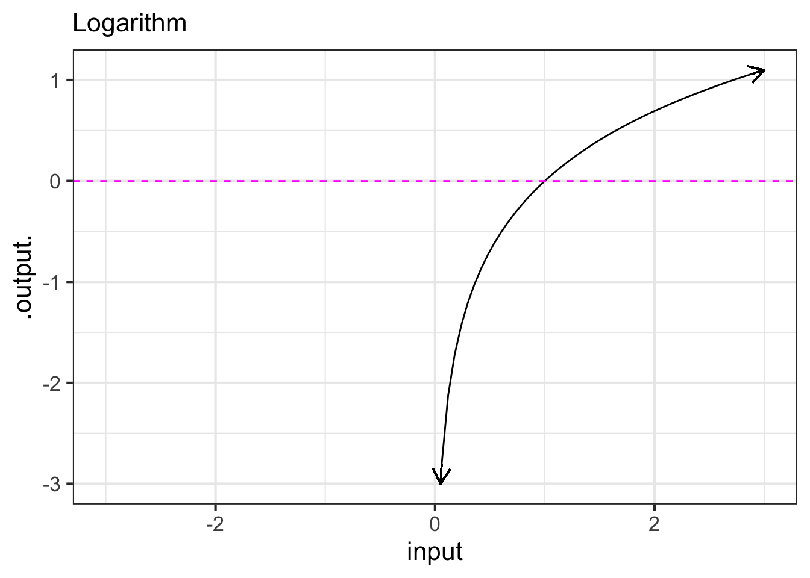
The logarithmic function is defined only for positive inputs. As the input increase from just above zero, the output t constantly grows but at a slower and slower rate. It never levels out.
The exponential and logarithmic functions are intimate companions. You can see the relationship by taking the graph of the logarithm, and rotating it 90 degrees, then flipping left for right as in Figure 5.8. (Note in Figure 5.8 that the graph is shown as if it were printed on a transparency which we are looking at from the back.)
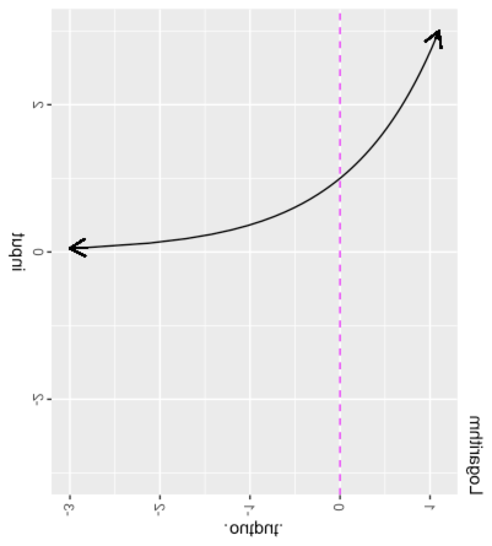
The output of the sinusoid function oscillates as the input changes. It is a periodic function, meaning that the pattern repeats itself identically from left to right in the graph.
If you studied trigonometry, you may be used to the sine of an angle in the context of a right triangle. That is the historical origin of the idea. For our purposes, think of the sinusoid just as a function that takes an input and returns an output. Starting in the early 1800s, oscillatory functions found a huge area of application in representing phenomena such as the diffusion of heat through solid materials and, eventually, radio communications.
In trigonometry, the sine has the cosine as a partner. But the two functions \(\sin()\) and \(\cos()\) are so closely connected that we will not often need to make the distinction, calling both of them simply “sinusoids.”
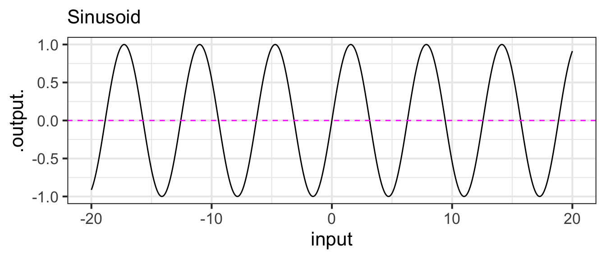
5.2 Exponentials & doubling time
The exponential function has a characteristic property that makes it extremely important in models of many phenomena: The value doubles in constant time. That phrase, “doubles in constant time” can be obscure, so let’s look at it carefully with reference to a graph of the exponential function.
Figure 5.10 is a graph of the exponential function, annotated with a set of evenly spaced vertical lines. The intersection of each vertical line with the function has been marked with a dot to make it easier to read off the output of the exponential when the input has any of the values marked by the vertical lines. For example, one of the vertical lines is at \(t=0\). From that you can confirm that \(\exp(t=0) = 1\). Looking at the vertical line at \(t = 1 \times 0.693\) you can confirm that \(\exp(t=0.693) = 2\). Similarly \(\exp(t=2\times 0.693) = 4\) and \(\exp(t=3\times 0.693) = 8\).
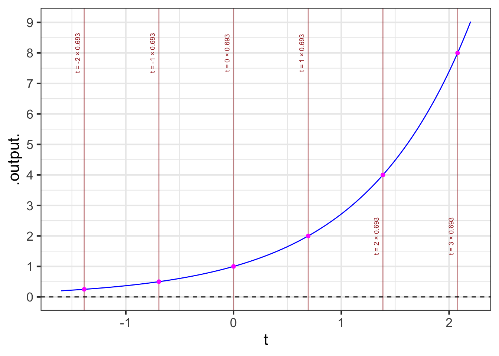
In other words, the output of the exponential function doubles whenever the input is increased by 0.693. Likewise, decreasing the input by 0.693 cuts the output by half. No other function than the exponential has this property that a constant change in the input (namely, 0.693) leads to a doubling of the output. So, 0.693 is “constant time” that leads to doubling.
5.3 The power-law family
Four of the pattern-book functions—\(1\), \(1/x\), \(x\), \(x^2\)— belong to an infinite family called the power-law functions. Some other examples of power-law functions are \(x^3, x^4, \ldots\) as well as \(x^{1/2}\) (also written \(\sqrt{x}\)), \(x^{1.36}\), and so on. Some of these also have special (albeit less frequently used) names, but all of the power-law functions can be written as \(x^p\), where \(x\) is the input and \(p\) is a number.
Within the power-law family, it is helpful to know and be able to distinguish between several groups:
- The monomials. These are power-law functions such as \(m_0(x) \equiv x^0\), \(m_1(x) \equiv x^1\), \(m_2(x) \equiv x^2\), \(\ldots\), \(m_p(x) \equiv x^p\), \(\ldots\), where \(p\) is a whole number (i.e., a non-negative integer). Of course, \(m_0()\) is the same as the constant function, since \(x^0 = 1\). Likewise, \(m_1(x)\) is the same as the identity function since \(x^1 = x\). As for the rest, they have just two general shapes: both arms up for even powers of \(p\) (like in \(x^2\), a parabola); one arm up and the other down for odd powers of \(p\) (like in \(x^3\), a cubic). Indeed, you can see in Figure 5.17 that \(x^4\) has a similar shape to \(x^2\) and that \(x^5\) is similar in shape to \(x^3\). For this reason, high-order monomials are rarely needed in practice.
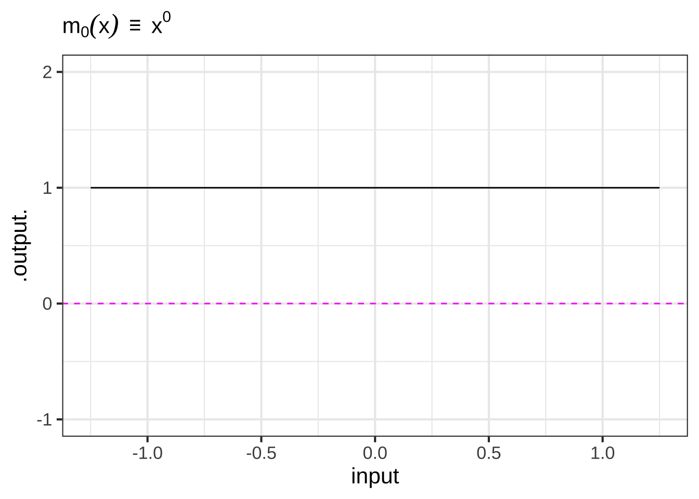
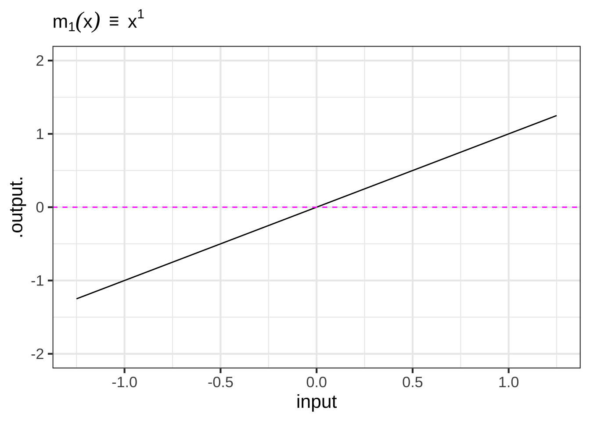
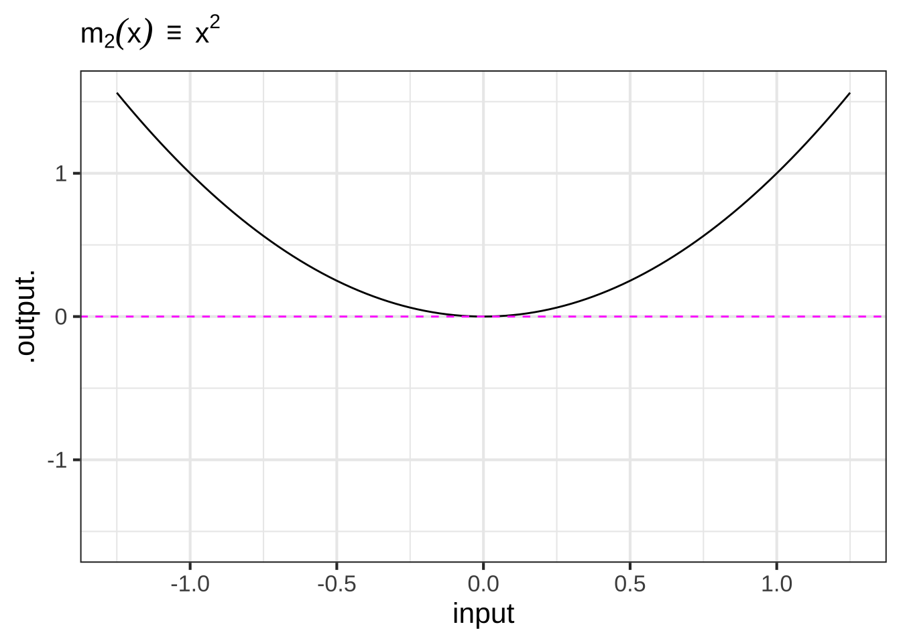
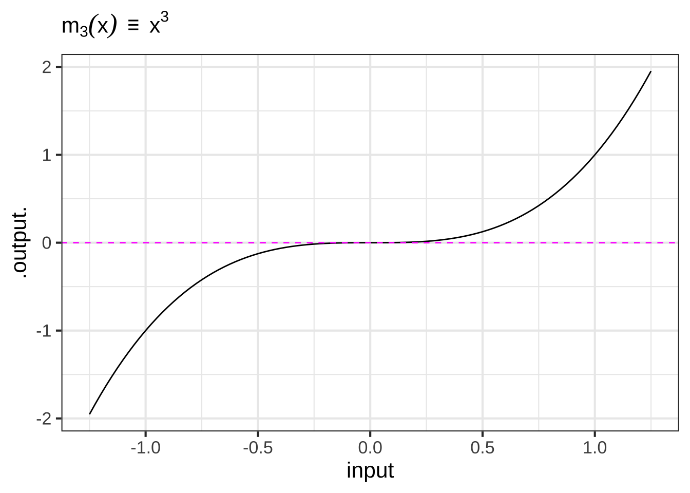
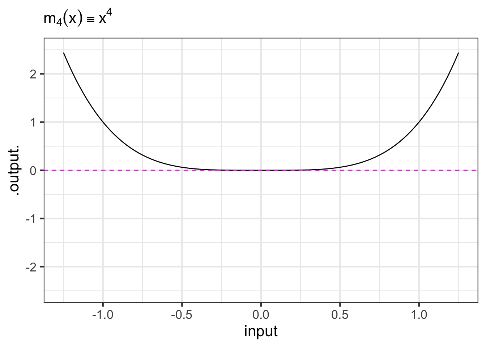
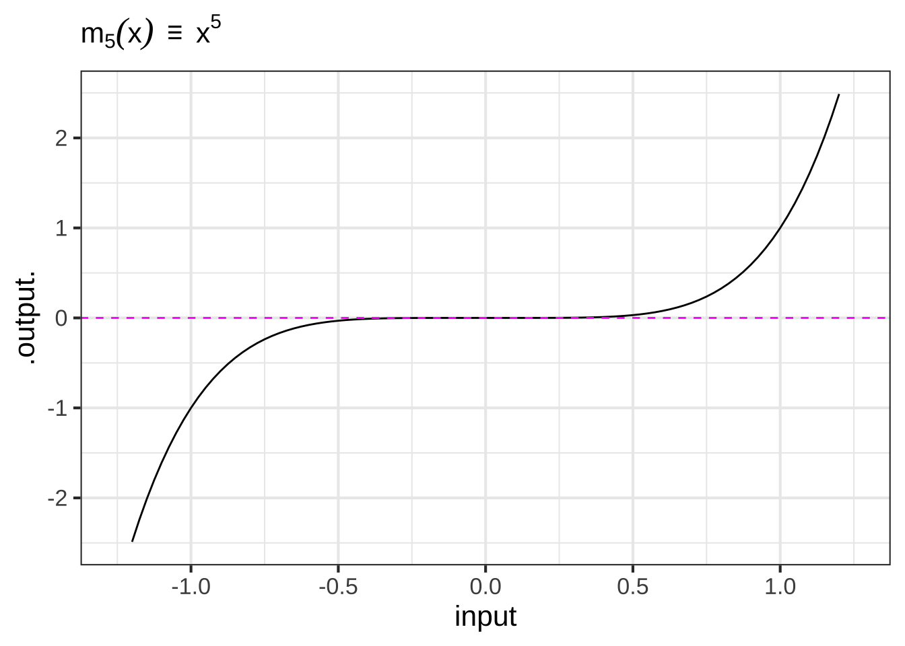

- The negative powers. These are power-law functions where \(p<0\), such as \(f(x) \equiv x^{-1}\), \(g(x) \equiv x^{-2}\), \(h(x) \equiv x^{-1.5}\). For negative powers, the size of the output is inversely proportional to the size of the input. In other words, when the input is large (not close to zero) the output is small, and when the input is small (close to zero), the output is very large. This behavior happens because a negative exponent like \(x^{-2}\) can be rewritten as \(\frac{1}{x^2}\); the input is inverted and becomes the denominator, hence the term “inversely proportional”.
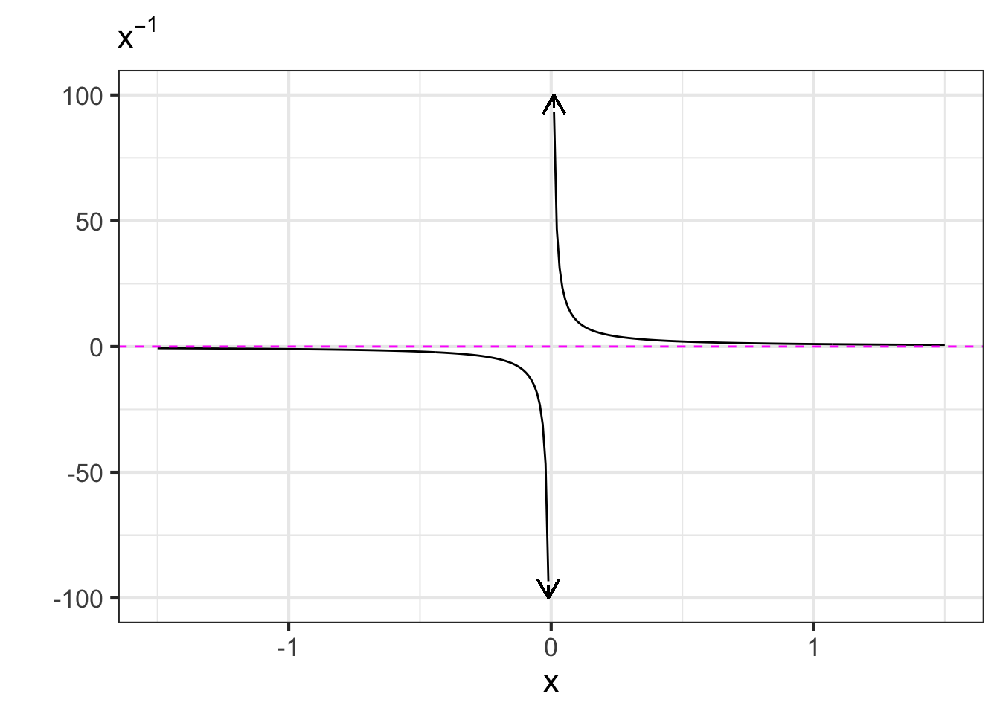
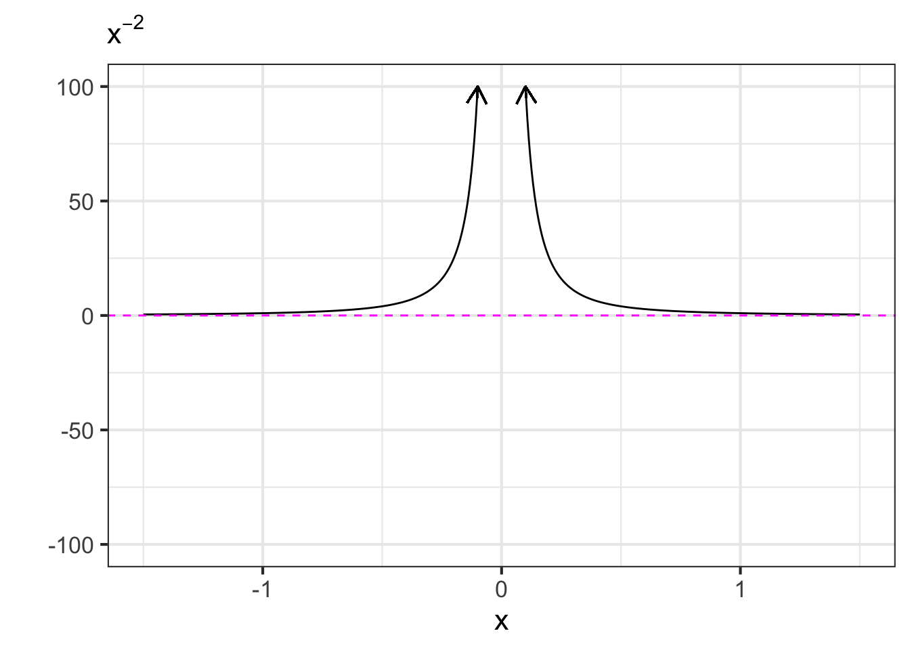
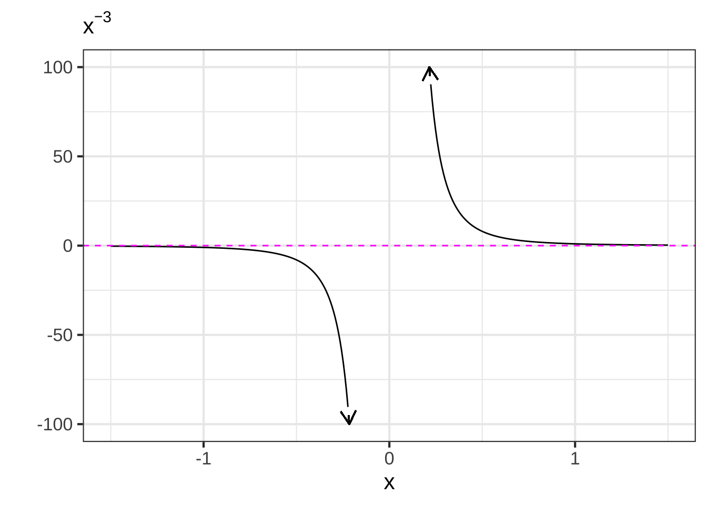
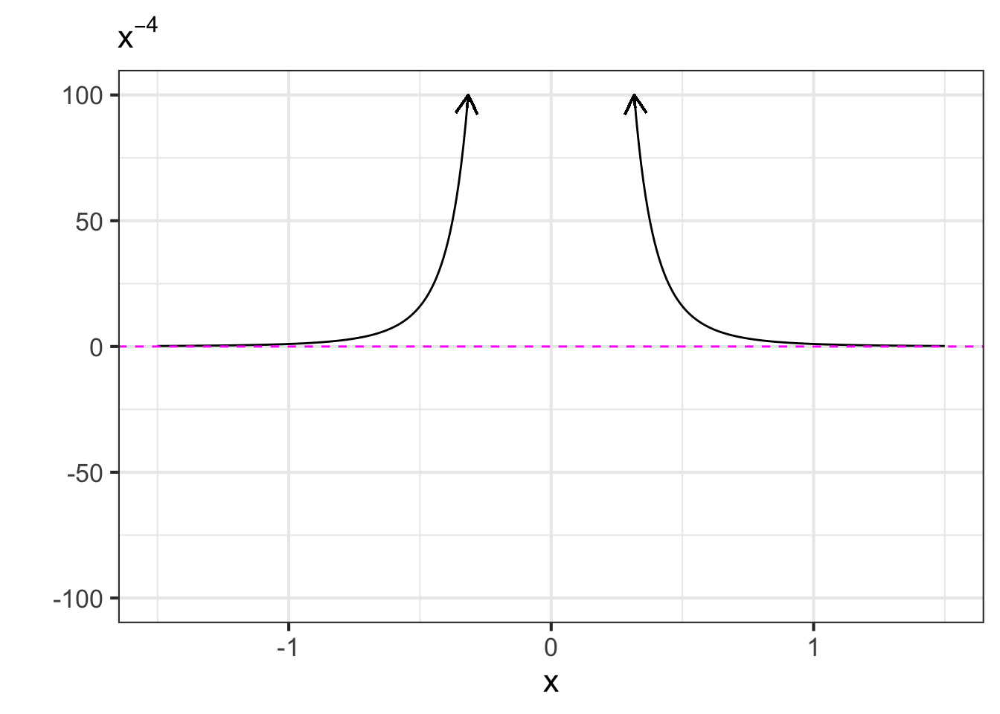

- The non-integer powers, e.g. \(f(x) = \sqrt{x}\), \(g(x) = x^\pi\), and so on. When \(p\) is either a fraction or an irrational number (like \(\pi\)), the real-valued power-law function \(x^p\) can only take non-negative numbers as input. In other words, the domain of \(x^p\) is \(0\) to \(\infty\) when \(p\) is not an integer. You have likely already encountered this domain restriction when using the power law with \(p=\frac{1}{2}\) since \(f(x)\equiv x^{1/2}=\sqrt{x}\), and the square root of a negative number is not a real number. You may have heard about the imaginary numbers that allow you to take the square root of a negative number, but for the moment, you only need to understand that when working with real-valued power-law functions with non-integer exponents, the input must be non-negative. (The story is a bit more complicated since, algebraically, rational exponents like \(1/3\) or \(1/5\) with an odd-valued denominator can be applied to negative numbers. Computer arithmetic, however, does not recognize these exceptions.)
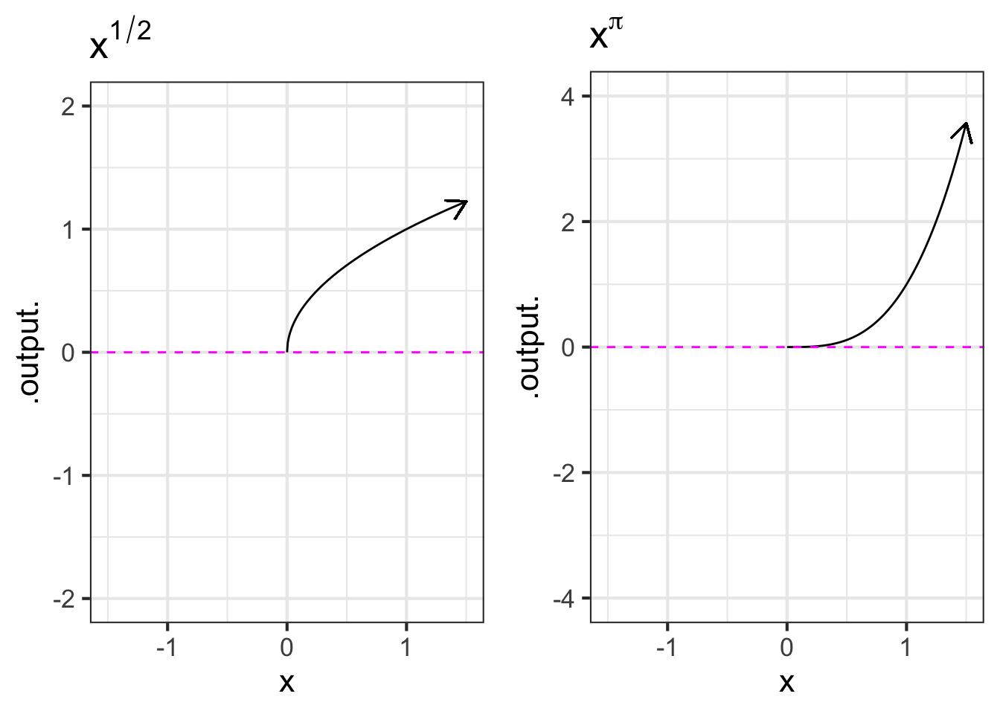
5.3.1 Computing note
When a function like \(\sqrt[3]{x}\) is written as \(x^{1/3}\) make sure to include the exponent in grouping parentheses: x^(1/3). Similarly, later in the book you will encounter power-law functions where the exponent is written as a formula. Particularly common will be power-law functions written \(x^{n-1}\) or \(x^{n+1}\). In translating this to computer notation, make sure to put the formula within grouping parentheses, for instance x^(n-1) or x^(n+1).
5.3.2 Some power-law relationships
You have been using power-law functions from early in your math and science education. Some examples:1
Examples of power-law relationships
| Setting | Function formula | exponent |
|---|---|---|
| Circumference of a circle | \(C(r) = 2 \pi r\) | 1 |
| Area of a circle | \(A(r) = \pi r^2\) | 2 |
| Volume of a sphere | \(V(r) = \frac{4}{3} \pi r^3\) | 3 |
| Distance traveled by a falling object | \(d(t) = \frac{1}{2} g t^2\) | 2 |
| Gas pressure versus volume | \(P(V) = \frac{n R T}{V}\) | \(-1\) |
| … perhaps less familiar … | ||
| Distance traveled by a diffusing gas | \(X(t) = D \sqrt{ \strut t}\) | \(1/2\) |
| Animal lifespan (in the wild) versus body mass | \(L(M) = a M^{0.25}\) | 0.25 |
| Blood flow versus body mass | \(F(M) = b M^{0.75}\) | 0.75 |
One reason why power-law functions are so important in science has to do with the logic of physical quantities such as length, mass, time, area, volume, force, power, and so on. We will discuss this at length later in the course and the principles will appear throughout calculus.
5.4 Domains of pattern-book functions
Each of our basic modeling functions, with two exceptions, has a domain that is the entire number line \(-\infty < x < \infty\). No matter how big or small is the value of the input, the function has an output. Such functions are particularly nice since we never have to worry about the input going out of bounds.
The two exceptions are:
- the logarithm function, which is defined only for \(0 < x\).
- some of the power-law functions: \(x^p\).
- When \(p\) is negative, the output of the function is undefined when \(x=0\). You can see why with a simple example: \(g(x) \equiv x^{-2}\). Most students had it drilled into them that “division by zero is illegal,” and \(g(0) = \frac{1}{0} \frac{1}{0}\), a double law breaker.
- When \(p\) is not an integer, that is \(p \neq 1, 2, 3, \cdots\) the domain of the power-law function does not include negative inputs. To see why, consider the function \(h(x) \equiv x^{1/3}\).
5.5 Symbolic manipulations
Several of the pattern book functions appear so often in MOSAIC Calculus that it is worth reviewing how to manipulate them symbolically. As an example, consider the function \[g(x) \equiv e^x e^x\ .\] This is a perfectly good way of defining \(g()\), but it is helpful to be able to recognize that the following definitions are exactly equivalent
\[f(x) \equiv e^{x+x}\\ h(x) \equiv e^{2 x}\ .\] The symbolic manipulation we touch on in this chapter involves being able to recall and apply such equivalences. we will need only a small set of them, all or most of which are found in a high-school algebra course.
We will be working with exponential and power-law functions in this chapter. It is essential that you recognize that these are utterly different functions.
An exponential function, for instance, \(e^x\) or \(2^x\) or \(10^x\) has a constant quantity raised to a power set by the input to the function.
A power-law function works the reverse way: the input is raised to a constant quantity, as in \(x^2\) or \(x^10\).
A mnemonic phrase for exponentials functions is
Exponential functions have \(x\) in the exponent.
Of course, the exponential function can have inputs with names other than \(x\), for instance, \(f(y) \equiv 2^y\), but the name “x” makes for a nice alliteration in the mnemonic.
5.5.1 Exponential and logarithm
Basic symbolic patterns for exponentials are (i) and (ii)
\(\LARGE\mathbf{(i)}\ \ \ \ \ e^x e^y \leftrightarrow e^{x+y}\)
.
\(\LARGE\mathbf{(ii)}\ \ \ \ \ \left(e^x\right)^y \leftrightarrow e^{x y}\)
Exponentials with a base other than \(e\) can be converted to base \(e\).
.
\(\LARGE\mathbf{(iii)}\ \ \ \ \ 2^x \leftrightarrow e^{\ln(2) x} = e^{0.69315 x}\)
\(\LARGE\mathbf{(iv)}\ \ \ \ 10^x \leftrightarrow e^{\ln(10) x} = e^{2.30259 x}\)
For mental arithmetic, easier use base 2 or 10. The base \(e = 2.718282\) is not conducive to such calculations. In Block 2 we will discuss why it is standard to write an exponential function as \(e^x\).
The logarithms, which we will return to in Chapter 15 are the inverse function of the exponential: Rule (v).
\(\LARGE\mathbf{(v).a}\ \ \ \ \ \ln(\exp(x)) = x\)
\(\LARGE\mathbf{(v).b}\ \ \ \ \ \exp(\ln(x)) = x\)
One place that we will encounter rules (ii) and (v) is in Chapter 8 when we look a “doubling times” and “half lives.” There we will deal with expressions such as \(2^{x/\tau} = e^{\ln(2) x/\tau}\).
Important symbolic patterns for logarithms are Rules (vi) through (vii).
\(\LARGE\mathbf{(vi)}\ \ \ln(x\ \ \!y) \leftrightarrow \ln(x) + \ln(y)\)
\(\LARGE\mathbf{(vii)}\ \ \! \ln(x / y) \leftrightarrow \ln(x) - \ln(y)\)
\(\LARGE\mathbf{(viii)}\ \ \ \ln(x^p) \leftrightarrow p \ln(x)\)$
Notice that the symbolic patterns for logarithms involve multiplication, division, and exponentiation, but not addition: \(\ln(x + y) \neq \ln(x) + \ln(y)\).
5.5.2 Power-law functions
In power-law functions, the quantity in the exponent is constant: we will call it \(m\), \(n\), or \(p\) in the following examples.
\(\LARGE\mathbf{(ix)}\ \ \ \ x^m x^n \leftrightarrow x^{m+n}\)
\(\LARGE\mathbf{(x)}\ \ \ \ \ \ \frac{x^m}{x^n} \leftrightarrow x^{m-n}\)
\(\LARGE\mathbf{(xi)}\ \ \ \ \ \left(x^n\right)^p \leftrightarrow x^{n\,p}\)
\(\LARGE\mathbf{(xii)}\ \ \ \ \ \ x^{-n} \leftrightarrow \frac{1}{x^n}\)
\(\LARGE\mathbf{(xiii)}\ \ \ \ \ \ \ x^0 \leftrightarrow 1\)
5.5.3 Sinusoids
\(\sin(x)\) is periodic with period \(2\pi\). Zero-crossings of \(\sin(x)\) are at \(x=..., -2\pi, -\pi, 0, \pi, 2\pi, ...\)
As we mentioned earlier, we will be calling both the \(\sin()\) and \(\cos()\) function “sinusoids.” They are merely shifted versions of one another:
\[\cos(x) = \sin\left(x + \frac{\pi}{2}\right)\ .\]
5.5.4 The straight-line function
You are probably used to a function that we call the “straight-line function” \[\line(x) \equiv m x + b\ .\] The name comes from the shape of a graph of \(\line(x)\) versus \(x\), which is a straight line. You are likely used to calling the parameter \(m\) the “slope” of the line, and the parameter \(b\) the “intercept.” (In general, by “intercept” we will mean the value of the function output when the input is zero. In high-school, this is often called the “y-intercept.”)
There are two simple symbolic manipulations that you will be using often in MOSAIC Calculus:
- Find the input \(x=x_0\) for which the output \(\line(x=x_0) = 0\). This input has many names in mathematics: the “root,” the “\(x\)-intercept,” the “zero crossing,” etc. We will call any input value that corresponds to an output of zero to be “a zero of the function.”
For the straight-line function, the zero is readily found symbolically: \[x_0 = - b/m\ .\]
- Re-write the straight-line function in the form \[\line(x) = a \left(x - x_0\right)\ .\]
Here, the slope is designated with \(a\). And, of course, \(x_0\) is the zero of the function, as you can see by setting \(x=x_0\): \(\line(x=x_0) = a (x - x_0){\LARGE\left.\right|}_{x = x_0} = 0\ .\)
The name “logarithm” is anything but descriptive. The name was coined by the inventor, John Napier (1550-1617), to emphasize the original purpose of his invention: to simplify the work of multiplication and exponentiation. The name comes from the Greek words logos, meaning “reasoning” or “reckoning,” and arithmos, meaning “number.” A catchy marketing term for the new invention, at least for those who speak Greek!
Although invented for the practical work of numerical calculation, the logarithm function has become central to mathematical theory as well as modern disciplines such as thermodynamics and information theory. The logarithm is key to the measurement of information and magnitude. As you know, there are units of information used particularly to describe the information storage capacity of computers: bits, bytes, megabytes, gigabytes, and so on. Very much in the way that there are different units for length (cm, meter, kilometer, inch, mile, …), there are different units for information and magnitude. For almost everything that is measured, we speak of the “units” of measurement. For logarithms, instead of “units,” by tradition another word is used: the base of the logarithm. The most common units outside of theoretical mathematics are base-2 (“bit”) and base-10 (“decade”). But the unit that is most convenient in mathematical notation is “base e,” where \(e = 2.71828182845905...\). This is genuinely a good choice for the units of the logarithm, but that is hardly obvious to anyone encountering it for the first time. To make the choice more palatable, it is marketed as the “base of the natural logarithm.” In this book, we will be using this natural logarithm as our official pattern-book logarithm.
5.6 Drill
Drill 1 Which of the pattern book bofunctions has an output value very near zero over almost all of its domain?
\(\ln()\) \(\sin()\) \(\text{dnorm()}\) \(e^x\)
Drill 2 Which of these basic modeling functions has value very near zero over almost half of its domain?
\(x^{2}\) \(\ln()\) \(\text{pnorm()}\) \(x^{-1}\)
Drill 3 Which of these basic modeling functions has value very near zero over almost half of its domain?
\(x^{2}\) \(\ln()\) \(e^x\) \(x^{-1}\)
Drill 4 Which of these pattern-book functions is not a monomial?
\(x^2\) \(\sqrt{x}\) \(x\)
Drill 5 Which value(s) is missing from the domain of \(x^{-1}\)?
- Zero
- All non-positive numbers
- Negative numbers
- No numbers are missing.
Drill 6 Which value(s) is missing from the domain of \(x^{1/2}\)?
- Zero
- All non-positive numbers
- Negative numbers
- No numbers are missing.
Drill 7 Which value(s) is missing from the domain of \(\ln(x)\)?
- Zero
- All non-positive numbers
- Negative numbers
- No numbers are missing.
Drill 8 Which value(s) is missing from the domain of \(\sin(x)\)?
- Zero
- All non-positive numbers
- Negative numbers
- No numbers are missing.
Drill 9 Which value(s) is missing from the domain of \(x^{-1/2}\)?
- Zero
- All non-positive numbers
- Negative numbers
- No numbers are missing.
Drill 10 Which of the following values is in the domain of the function \(x^{0.429}\)?
-2 -1 0 All of them
Drill 11 Is zero in the domain of the function \(x^{-1}\)?
Yes No
Drill 12 Which of the following values is in the domain of the function \(\sin(x)\)?
-2 -1 0 All of them
Drill 13 What is the output from the command log(-1) ?
0 An error message. -Inf NaN
Drill 14 What is the output from the command log(0) ?
0 -Inf NaN
Drill 15 Which of the following values is in the domain of the function \(\ln()\)?
-1 0 1 All of them
Drill 16 Which of the following values is in the domain of the function \(x^2\)?
-1 0 1 All of them
Drill 17 By how much should you increase the input to the exponential function to produce a doubling of the output?
0.5 0.693 1 1.386 2 none of these
Drill 18 By how much should you increase the input to the exponential function to produce a quadrupling of the output?
0.5 0.693 1 1.386 2 none of these
Drill 19 By how much should you decrease the input to the exponential function to cut the output value by a factor of one-half?
0.5 0.693 1 1.386 2 none of these
5.7 Exercises
Exercise 5.01
Run this graph-making command in your console:
slice_plot(exp(x) ~ x, bounds(x=-3:3))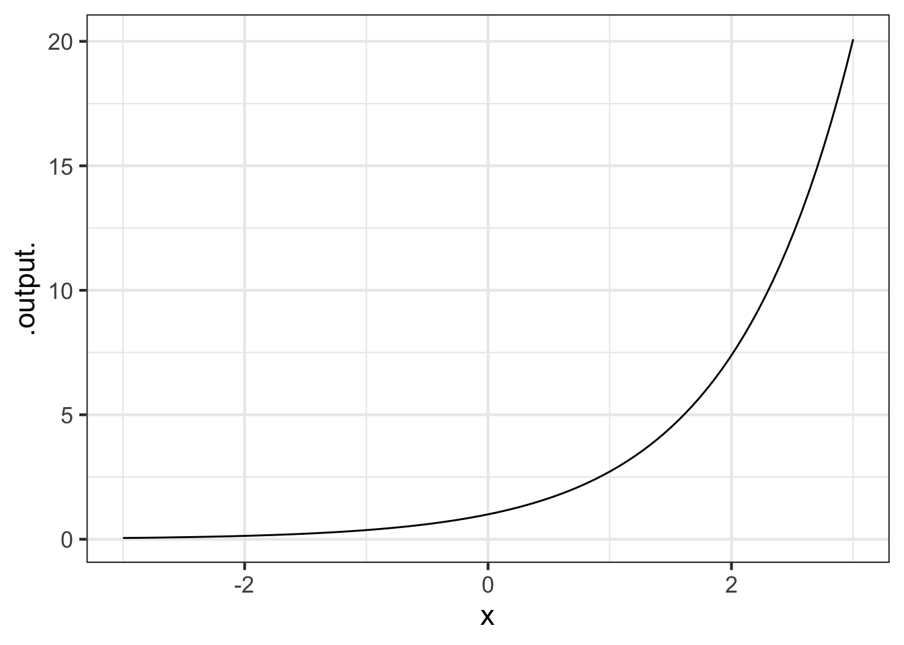
In this exercise, you will be modifying the sandbox code to draw different functions, so you can examine their shapes.
Your task is to read and interpret the graphs of the basic modeling functions. Here, you will be looking for zero-crossings: the neighborhood of a point in the function’s domain where the output of the function is negative for inputs on one side and positive for inputs on the other side. If zero is touched but not crossed, we will call that “touched zero.”
The table below lists the pattern-book functions. For each function in the list, fill in the table. That is, say whether the function crosses zero, touches zero but does not cross, or does not touch at all in the part of the domain shown in the graphic: \(-3 \leq x \leq 3\). Also note if the value of the function appears to be reaching a horizontal asymptote at zero for very negative \(x\), for very positive \(x\), for both, or neither.
| function name | R formula | zero in domain shown in graph | asymptotic zero |
|---|---|---|---|
| exponential | exp(x) |
no zeros | for very negative \(x\) |
| logarithm | |||
| sinusoid | |||
| square | |||
| proportional | |||
| constant | |||
| reciprocal | |||
| gaussian | |||
| sigmoid |
Exercise 5.02
There are nine pattern-book functions: constant, identity, square, reciprocal, sinusoid, exponential, logarithm, gaussian, sigmoid.
On a piece of paper, sketch from memory a graph of each of the pattern-book functions.
Exercise 5.03
These questions ask you, for each of the pattern-book functions, to find a specific input/output pair.
Using your R console, answer these questions.
Part A What is the exact output of the pattern-book exponential function when the input is \(x=0\)?
0 0.3989423 1/2 1
Part B What is the exact output of the pattern-book sine function when the input is \(x=0\)?
0 0.3989423 1/2 1
Part C What is the exact output of the pattern-book sigmoid function when the input is \(x=0\)?
0 0.3989423 1/2 1
Part D What is the output (to several digits) of the pattern-book Gaussian function when the input is \(x=0\)?
0 0.3989423 1/2 1
Part E What is the exact output of the pattern-book constant function?
0 0.3989423 1/2 1
Exercise 5.04
Part A True or false: \(2^x\) is a power-law function.
TRUE FALSE
Part B True or false: \(3/x^2\) is a power-law function.
TRUE FALSE
Part C True or false: \(5\sqrt{x}\) is a power-law function.
TRUE FALSE
Part D The gravitational force, F, between two bodies is inversely proportional to the square of the distance \(d\) between them. Then …
\(F = k d^{2}\) \(F = kd^{-2}\) \(F = k d^{1/2}\) \(F = k d^{-1/2}\)
Exercise 5.06
All but two of the pattern-book functions have a domain that runs over the whole number line: \(-\infty < x < \infty\).
A. Which pattern-book function has a domain that excludes zero and negative numbers as inputs?
B. Which pattern-book function has just a single value missing from its domain?
Exercise 5.07
Consider this graph of a function \(g(x)\):
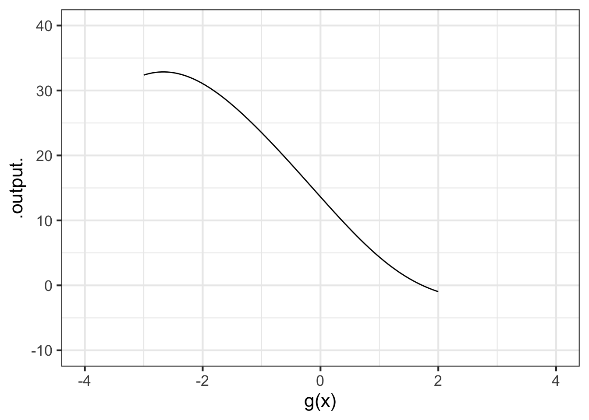
Part A What is the domain of \(g(x)\)?
- \(-\infty < x < \infty\)
- \(-3 \leq x \leq 2\)
- \(-4 \leq x \leq 4\)
- \(-10 \leq g(x) \leq 40\)
- \(-1 \leq g(x) \leq 33\)
Part B What is the range of \(g(x)\)?
- \(-\infty < x < \infty\)
- \(-3 \leq x \leq 2\)
- \(-4 \leq y \leq 4\)
- \(-10 \leq g(x) \leq 40\)
- \(-1 \leq g(x) \leq 33\)
Exercise 5.08
A function’s domain is the set of possible inputs to the function. A function’s range is the set of possible outputs.
In each of the following questions, choose the correct answer from these possibilities:
- All: All
- Pos: The positive numbers (excluding zero)
- Neg: The negative numbers (excluding zero)
- NonNeg: The non-negative numbers
- Closed: Closed.
Part A What is the range of the pattern-book exponential function?
Pos NonNeg Neg All Closed
Part B What is the range of the pattern-book sine function?
Pos Neg All Closed
Part C What is the range of the pattern-book logarithm function?
Pos NonNeg Neg All Closed
Part D What is the range of the pattern-book square function?
Pos NonNeg Neg All Closed
Part E What is the range of the pattern-book proportional function?
Pos Neg All Closed
Part F What is the range of the pattern-book sigmoid function?
Pos NonNeg Neg All Closed
Exercise 5.09
Use an R console to make this plot.
slice_plot(log(x) ~ x, bounds(x=-5:5))Explain why the function graph doesn’t cover the whole domain indicated in the command.
Calculate
log(-5). What is the result?
The answer to (2) demonstrates an important feature of modern computer numerics. When an input is outside of the domain of the function, the function value is undefined. This “undefined” value is represented by a special “number,” which has no value. In fact, the value stands for “not a number.”
- Do some arithmetic with
NaN, for instance, adding 5 or multiplying by 3. Explain the results.
5.8 New Concepts
Exercise 5.15
Some of our pattern-book functions have a distinctive property called scale invariance. This means the graph of the function looks the same even when plotted on very different horizontal and vertical axes. The function \(\ln(x)\) plotted on two different scales in ?fig-log-scale-invariance shows that the graph of the function has practically the same shape on either scale.
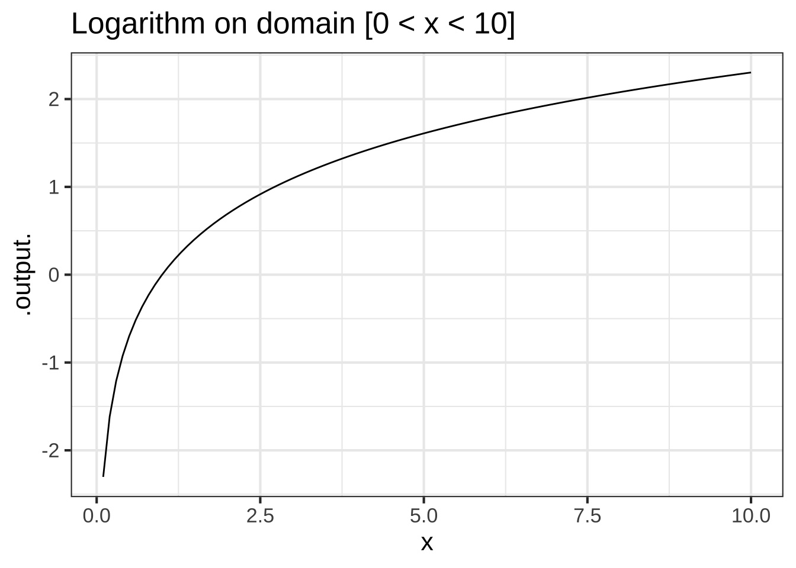
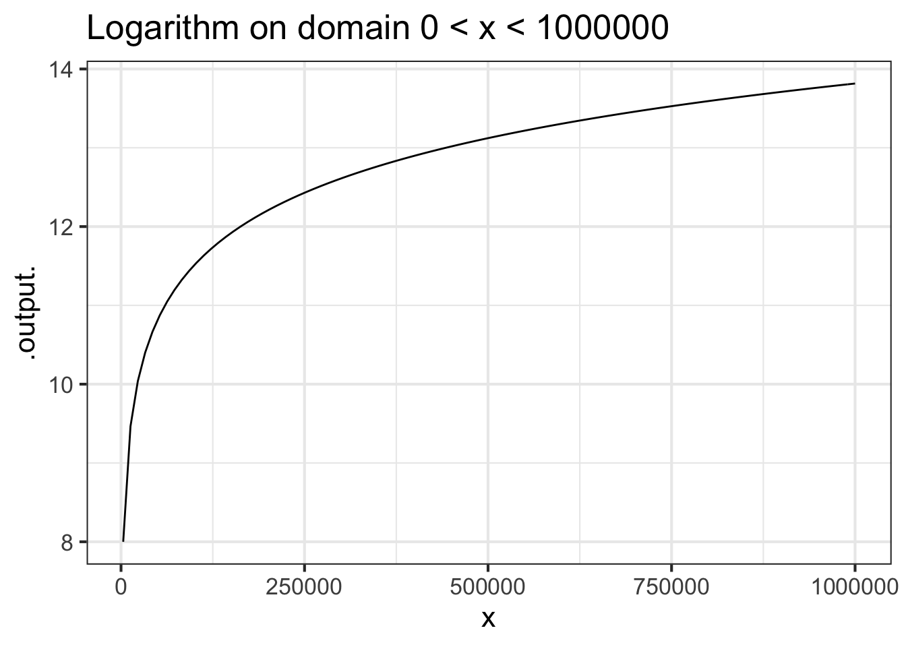
?fig-square-invariance shows a power-law function, \(g(x) \equiv x^2\), which is also scale invariant.
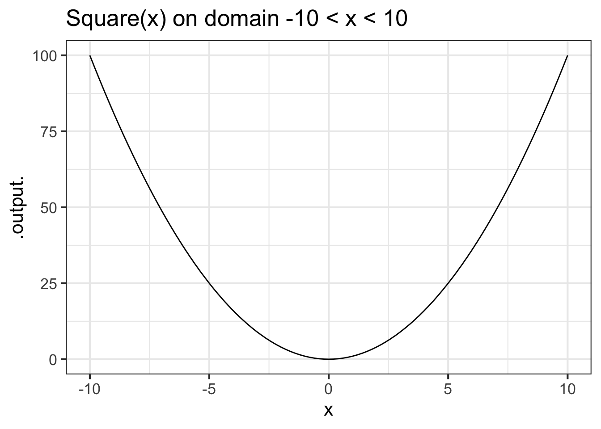
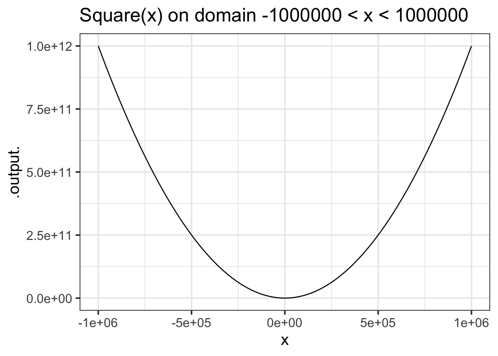
Other pattern-book functions are not scale invariant, for example \(\sin(x)\).
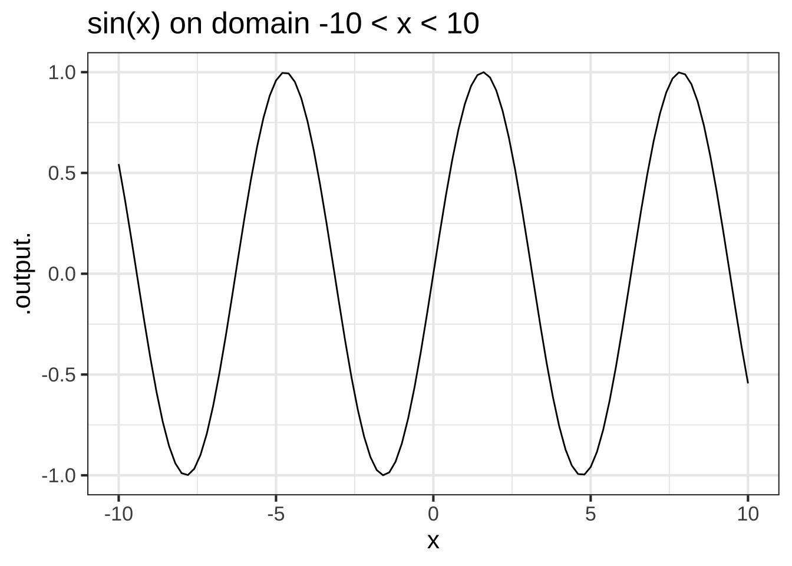

In contrast to scale-invariant functions, some of our pattern-book functions have a characteristic scale. This is a domain length over which the whole of a characteristic feature of the function is evident. Graphing on larger domains simply squashes down the characteristic feature to a small part of the graphic domain. For instance, in the \(\sin()\) function the cycle is a characteristic feature. The cycle in the pattern-book sinusoid has a characteristic length of \(2 \pi\), the length of the cycle. Consequently, the graph looks different depending on the length of the graphics domain in multiples of the characteristic length. You can see from ?fig-sin-invariance that the graph on the domain \(-10 < x < 10\), that is, about 3 times the characteristic scale, looks different from the graph on the larger domain that has a length 30 times the characteristic scale.
The output of the sigmoid function runs from 0 to 1 but reaches these values only asymptotically, as \(x \rightarrow \pm \infty\). In defining a characteristic scale, it would be reasonable to look at the length of the domain that takes the output from, say, 0.01 to 0.99. In other words, we want the characteristic scale to be defined in a way that captures almost all the action in the output of the function. For a gaussian, a reasonable definition of a characteristic scale would be the length of domain where the output falls to about, say, 1% of its peak output.
Part A The gaussian (hump) function dnorm() has a characteristic scale. Which of these is a domain length that can encompass the characteristic shape of the gaussian?
0.1 1 6 16 256
Part B The sigmoid function pnorm() also has a characteristic scale. Which of these is a domain length that can encompass the characteristic shape of the sigmoid?
0.1 1 6 16 256
Throughout science, it is common to set a standard approach to defining a characteristic scale. For instance, the characteristic scale of an aircraft could be taken as the length of body. Gaussian and sigmoids are so common throughout science that there is a convention for defining the characteristic scale called the standard deviation. For the pattern book gaussian and sigmoid, the standard deviation is 1. That is much shorter than the domain that captures the bulk of action of the gaussian or sigmoid. For this reason, statisticians in practice use a characteristic scale of \(\pm 2\) or \(\pm 3\) standard deviations.
The animal lifespan relationship is true when comparing species. Individual-to-individual variation within a species does not follow this pattern.↩︎